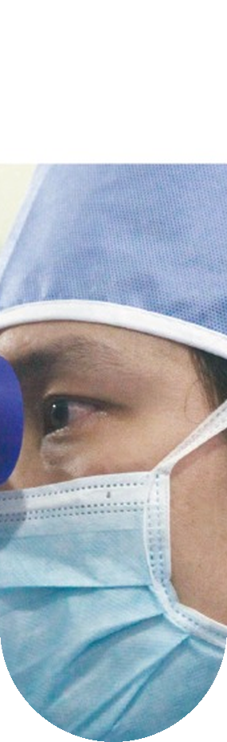
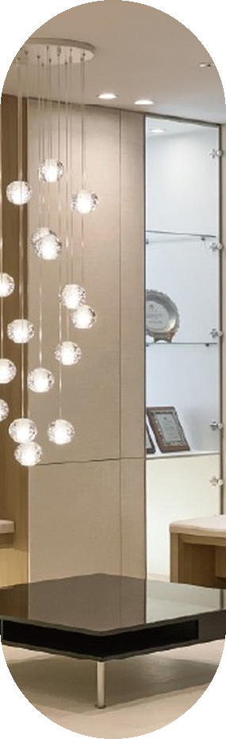
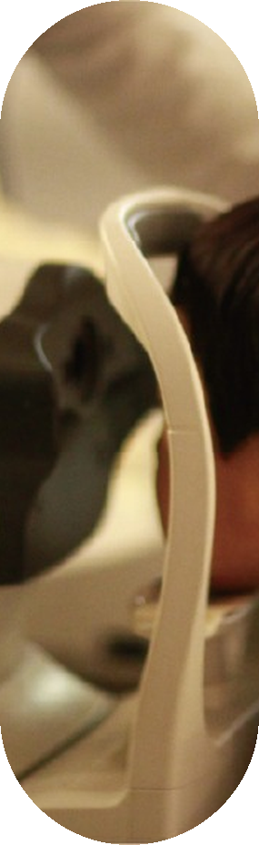
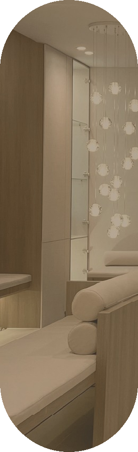
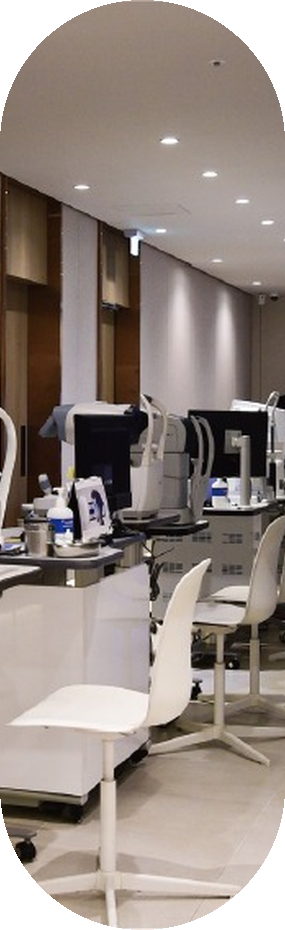
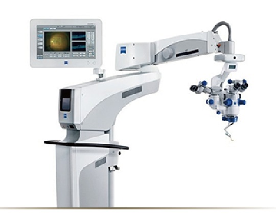
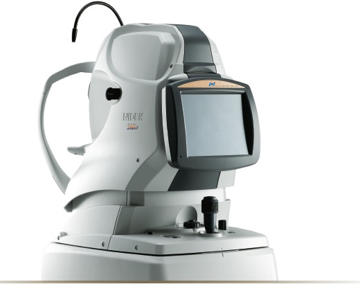
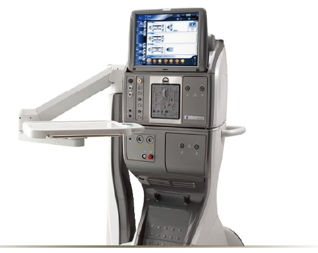
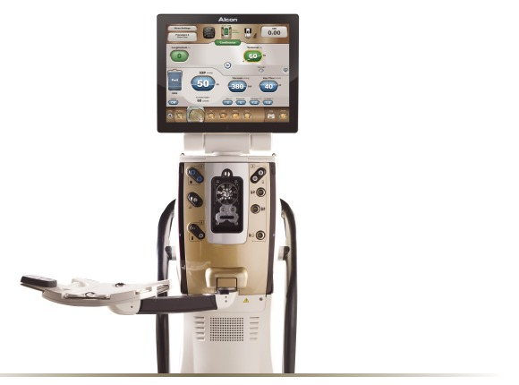

YOUR EYES, OUR PROMISE
당신의 눈,
우리의 약속.
각자의 전문 분야를 가진
3인의 안과 전문의가 함께합니다.
노안·백내장 · 망막·녹내장 · 소아안과
01 / 03
 CARE THAT SEES YOU
CARE THAT SEES YOUSince 2013. With you, always.
사상구 주례동에서, 당신의 눈 건강을 함께 살핍니다.
OUR DOCTORS
서로 다른 전문 분야,
함께하는 세심한 진료.
1 / 3
SPECIALIZED CARE
주례성모안과 주요 진료
눈의 변화부터 일상의 불편까지,
필요한 진료 분야를 확인하세요.







SINCE2013
사상구 주례동에서 13년
안과 전문의 3인 진료
OUR PROMISE
세상을 더 선명하게
볼 수 있도록.
눈 건강을 세심하게 살피고, 시력 회복과 지속적인 눈 건강 관리를 돕는 것. 주례성모안과가 지켜가는 진료의 방향입니다.
01
충분한 상담
02
정밀한 검사
03
맞춤형 치료
04
투명한 설명
05
지속적 관리
06
협진 체계

PRECISION & CARE
정밀검사·수술 장비

PRECISION & CARE
루메라 700
백내장 수술현미경
01 / 04
PRECISION & CARE
니덱 OCT
안저·시신경 검사
02 / 04
PRECISION & CARE
센츄리온
백내장 수술
03 / 04
PRECISION & CARE
백내장 수술 장비
수술 장비
04 / 04OUR SPACE
머무는 순간까지,
편안하도록.

VISIT US
가까이에서 함께하는
당신의 눈 건강.
진료시간
- 평일
- 09:00 — 18:00
- 토요일
- 09:00 — 13:00
- 점심시간
- 13:00 — 14:00
- 일요일·공휴일
- 휴진
오시는 길
부산 사상구 가야대로 276엠스퀘어메디컬센터 9층051.325.1919
진료와 내원에 관한 궁금한 점을 문의해 주세요.